MySQL Docker Image
This post briefly documents the process of pulling a MySQL Docker image from docker hub and running few basic commands to interact with it.
Introduction
MySQL is a relational database management system based on SQL – Structured Query Language.
MySQL Workbench is a visual database design tool that integrates SQL development, administration, database design, creation and maintenance into a single integrated development environment for the MySQL database system.
Docker is a set of platform as a service products that use OS-level virtualization to deliver software in packages called containers. Containers are isolated from one another and bundle their own software, libraries and configuration files; they can communicate with each other through well-defined channels.
Goals
- Pull a MySQL Docker Image from Docker Hub
- Run the downloaded MySQL Docker Image
- Connect to the Database via CLI
- Interact with the MySQL Database via CLI
- Interact with the MySQL Database via MySQL Workbench
- Container Management (Stop, Restart, Stats)
- Cleanup (Remove)
Minimum Software Requirements
Getting Started
Setup
Start your local Docker Instance if necessary.
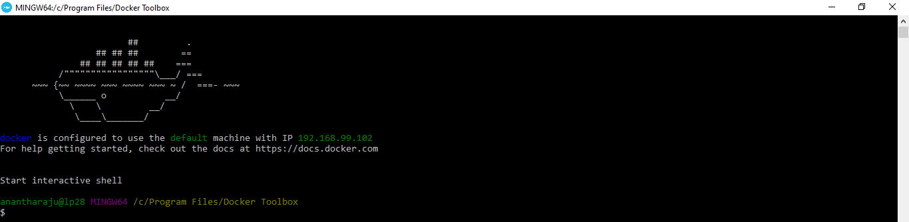
Check if you already have any existing MySQL images locally. 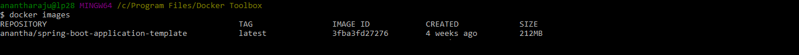
Step 1 - Pull a MySQL Docker Image from Docker Hub
Check all of the available tags that can be downloaded from this link. https://hub.docker.com/_/mysql?tab=tags
For demonstration, i'll be using the 8.0.26 version of MySQL.
docker pull mysql:8.0.26
Pull a MySQL Docker Image
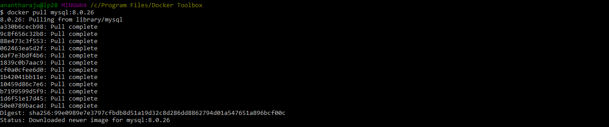
docker images
Check if the MySQL Docker image has been successfully pulled.
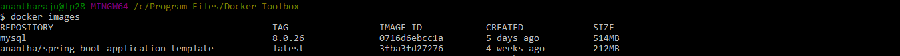
Step 2 - Run the downloaded MySQL Docker Image
docker run --name mysql-docker -p 3306:3306 -e MYSQL_ROOT_PASSWORD=password -e MYSQL_DATABASE=sbat -e MYSQL_USER=sbat -e MYSQL_PASSWORD=sbat -d mysql:8.0.26
Run the MySQL docker image.
In the above command, the following parameters can be configured as per your need.
| Parameter | Example Value |
|---|---|
--name |
mysql-docker |
-p |
3306:3306 (Ports expose) |
MYSQL_ROOT_PASSWORD |
password |
MYSQL_DATABASE |
sbat |
MYSQL_USER |
sbat |
MYSQL_PASSWORD |
sbat |
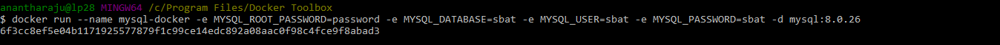
docker ps
List all the running containers to check if your image is running.
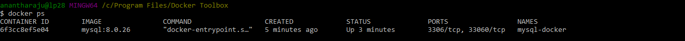
Step 3 - Connect to the Database via CLI
docker exec -it mysql-docker mysql -u sbat -p sbat
Connect to MySQL image via interactive CLI.
In the above command, the following parameters are set as configured in the previous step.
| Parameter | Example Value |
|---|---|
| -u | sbat |
| -p | sbat |
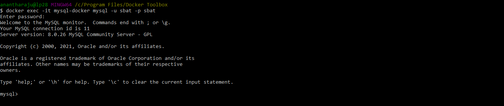
Other ways to connect to the Database docker image.
| Command | Description |
|---|---|
| docker exec mysql-docker mysql -usbat -psbat -e 'show databases;' | connect to MySQL image without interactive CLI. |
| docker exec -it mysql-docker mysql -usbat -psbat -e 'show databases;' | connect to MySQL image without interactive CLI. |
Step 4 - Interact with the MySQL Database via CLI
show databases;
Lists the databases on the MySQL server host.
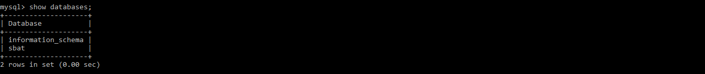
show schemas;
A synonym for show databases;
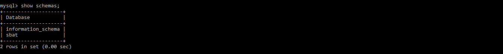
use [database_name];
Select any existing database in the SQL schema.
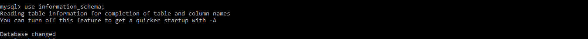
show tables;
List tables in a Database.
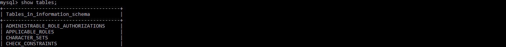
exit
Quit MySQL shell.
Step 5 - Interact with the MySQL Database via MySQL Workbench
Connect to the DB by entering the following details in MySQL Workbench.
| Key | Value |
|---|---|
| Connection Name | Any name of your choice |
| Hostname | 192.168.99.102 (use docker-machine ip to find your Docker Toolbox IP address. usually 192.168.99.102) |
| Username | sbat |
| Password | sbat |
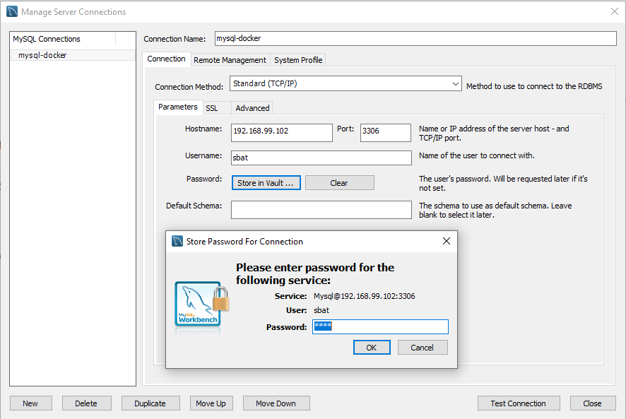
Step 6 - Container Management (Stop, Restart, Stats)
docker stop [container_id]
Stop the container.
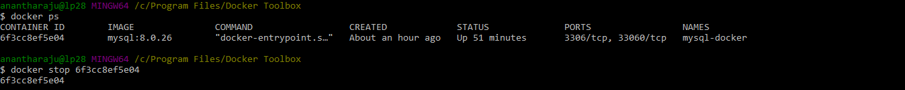
docker ps -a
List all the containers, including the ones that have finished executing to check if your container has been stopped.
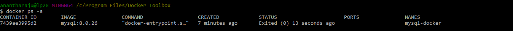
docker restart [container_name]
Restart the container.
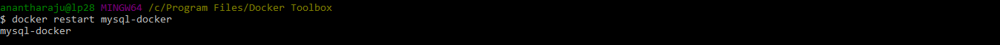
Cleanup (Remove)
docker rm [container_name]
Remove the container.
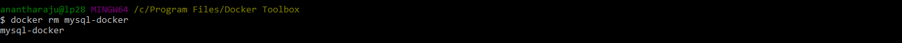
docker ps -a
List all the containers, including the ones that have finished executing to check if your container has been stopped and removed. There wont be any containers listed now.
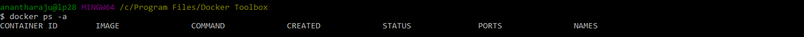